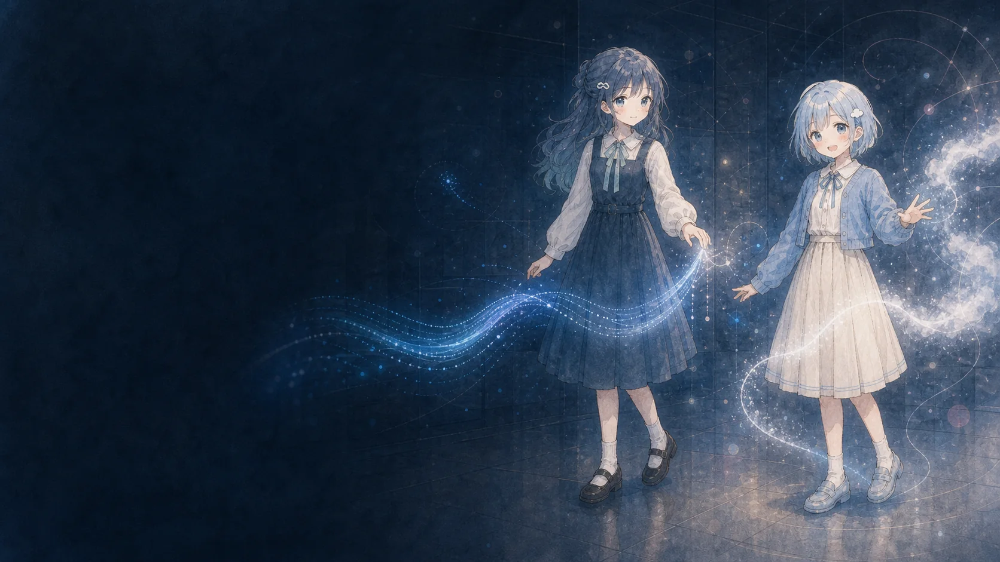
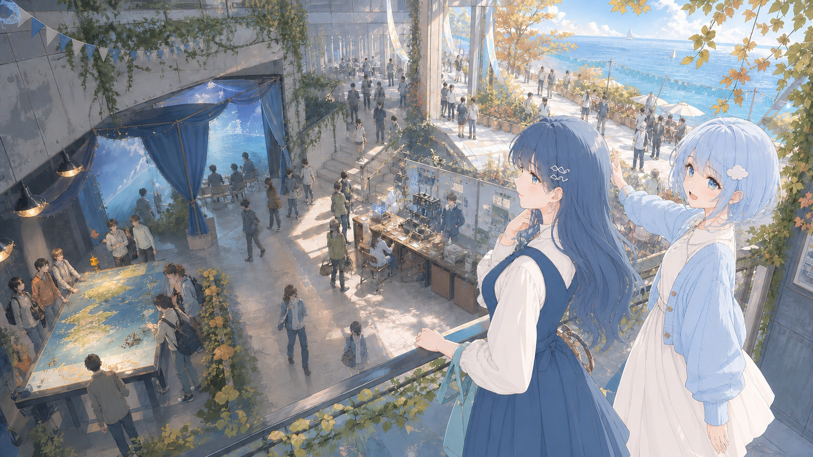
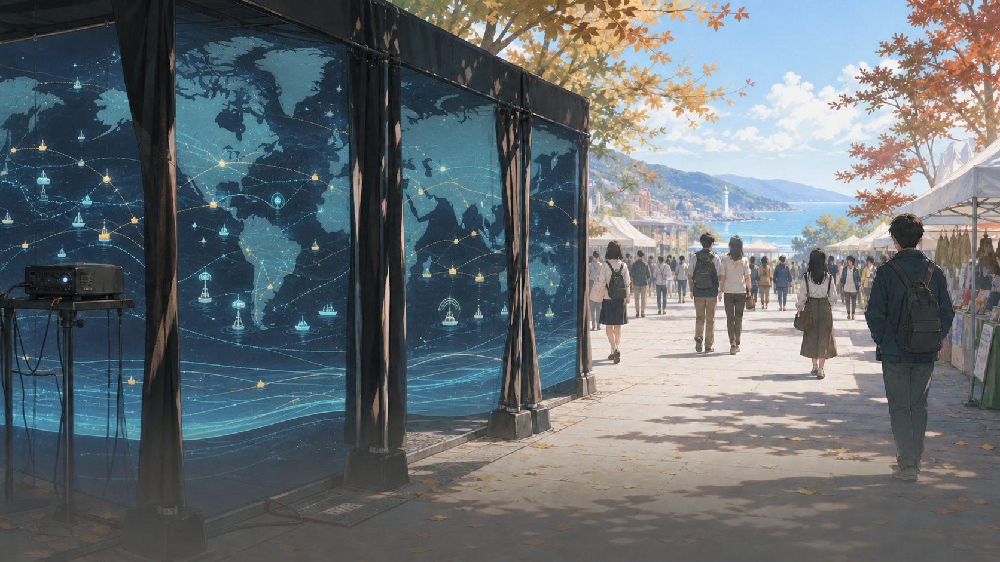
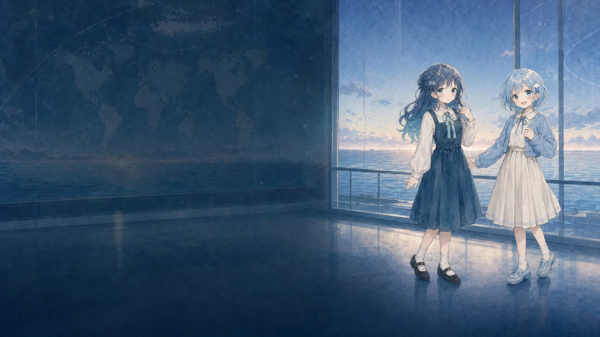
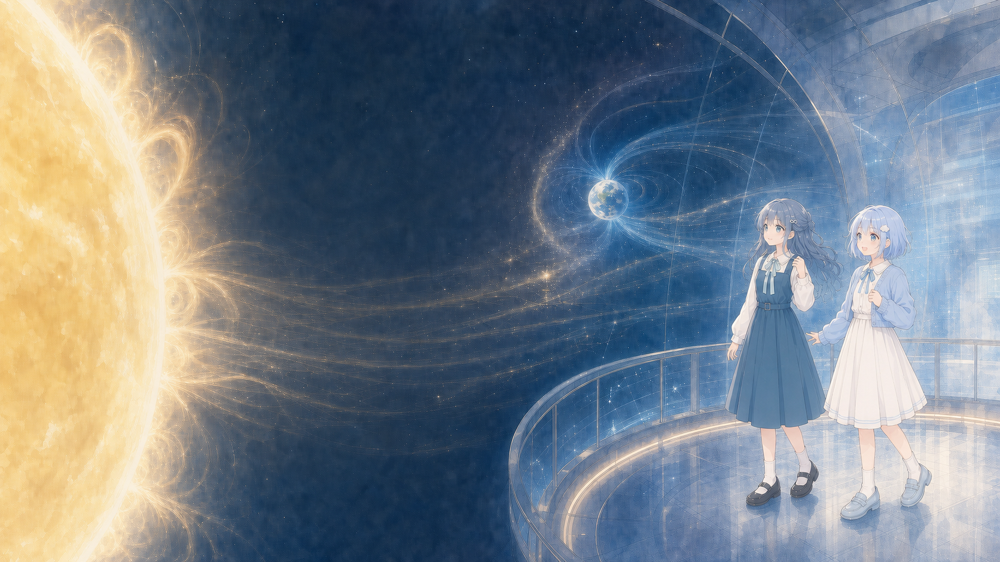
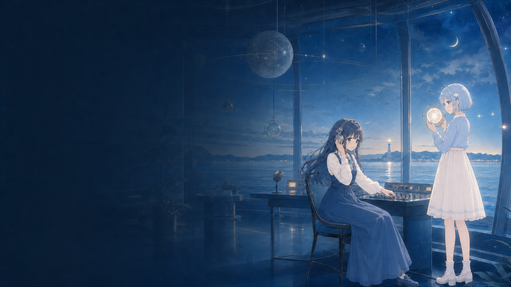
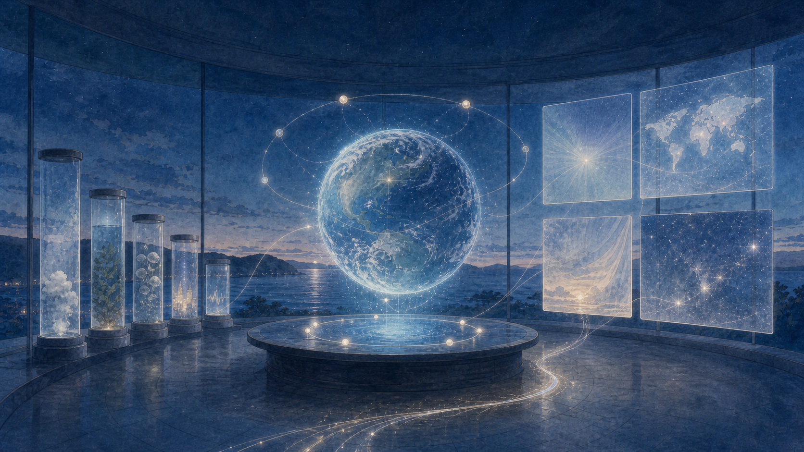
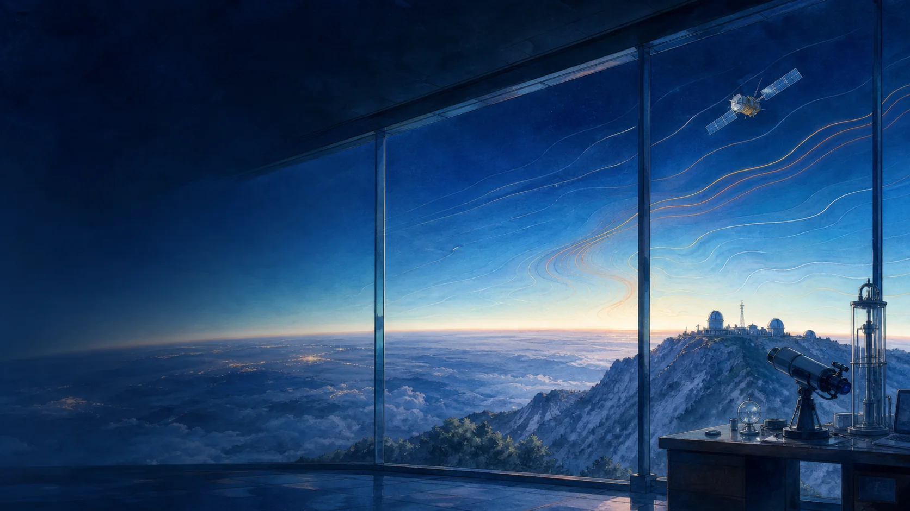
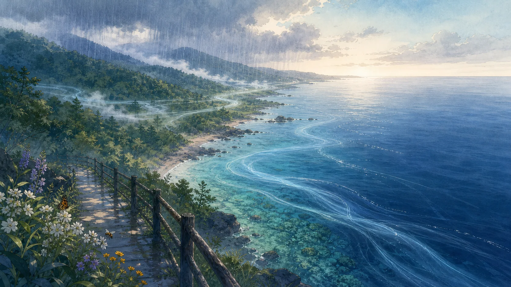
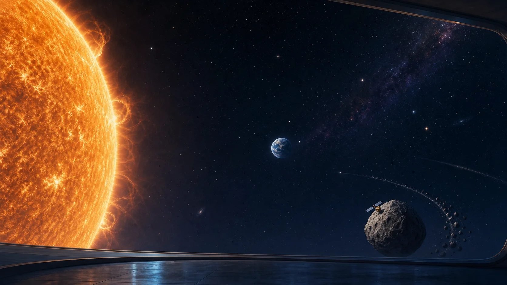

空気の声
CO₂の季節変化と、長い時間の増加を色と呼吸で見る。
GAIA SENSATION / PRELOADING
0%オープニングの光・人物・音を準備しています 0 / 4
PROLOGUE / ZUSHI COAST
画面越しでは、何度も話していた。同じ風の中で会うのは、今日が初めてだった。
ZUSHI / NEAR FUTURE
01 MIZU / FEEL
02 AME / MEASURE
SENSES / MEASURES / TRACES / CHOICES
感じ、測り、残し、選ぶ。その重なりから、まだ名のない未来が立ち上がる。
01感じる。MIZU
02測る。AME
03残す。SAKUYA
04ともに選ぶ。YOU
GAIA SENSATION / INTERACTIVE SYSTEM
GAIA SENSATION / SOUND SETTING
GS LISTENING TO THE PLANET
0102030405
GAIA SENSATION / SOUND ARCHIVE
TRACK 01 / OPENING THEME
物語が始まる直前、観測の扉が開く場面の音楽。






Gaia Transformation Project
INTERACTIVE SYSTEM / 2026
EARTH DATA × INTERACTIVE SYSTEM
公開データに残された地球の変化を、光と地図と物語へ。
人間と地球が、ともに次の姿へ進むためのインタラクティブ・システム。
FREE EXPLORATION / SELECT A LENS
02 / ABOUT GAIA TRANSFORMATION
Abstract mode / Touch the signal
SENSE / 02
意味と操作が直接つながる10の観測展示から、最初に見る入口を選んでください。
最初に触れる感覚器を選ぶ
CO₂の季節変化と、長い時間の増加を色と呼吸で見る。
選んだ展示は、あとから01〜10のバンクで切り替えられます。
BEHIND THE SENSES / 01

01 地球から届くもの
02 作品内に保存
03 数字の読み分け
04 数字を感覚へ
05 観客が出会うもの
観客の軌跡 触れた記憶は、10番目の感覚器へ戻る
THE SYSTEM IN PLAIN WORDS
大気、海、森林、生きもの、社会、地震に加え、太陽活動、小惑星、系外惑星、リュウグウの公開記録を使います。
審査中に通信が切れても動くよう、必要な数値と画像をあらかじめ保存しています。
実際の記録はSOURCE、計算した値はDERIVED、未来の仮定はSCENARIOと表示します。
CO₂濃度は色、海流は線、地震は波の到着時間に置き換えます。詳しい計算はデータ台帳で確認できます。
画面に触れた跡は少しずつ作品に残り、10番目の展示で九つのデータと重なります。
CONTEST REGULATION
作品はHTML・CSS・JavaScriptで作りました。描画にはChrome標準のWebGL2とCanvasを使い、 外部の描画ライブラリは使っていません。
画面、デザイン、アニメーション、操作をすべてこの三つで実装しています。
jQuery、Three.js、Pixi.js、anime.jsなどは使っていません。WebGL2やCanvasはChrome標準の機能です。
GitHubに提出するコードと、Cloudflareで公開する作品は同じ内容です。
マウス、タッチ、キーボードで操作でき、画面の広さに合わせてレイアウトが変わります。
表示中に外部APIへ接続しません。リアルタイム連携は次の開発段階で検討します。
OPEN DATA CREDITS / SOURCES & USAGE
このセクションでは、作品に使った公開データを「誰が、何を測ったか」と 「画面の色や動きにどう変えたか」の順で紹介します。公式ページへのリンク、使用した感覚器、 補間や未来予測の有無も確認できます。

CHAPTER 01 / AIR & HEAT
一回の測定では見えない変化も、衛星と地上観測を時間の上へ並べると、季節の呼吸と戻らない増加に分かれます。
温室効果ガス観測技術衛星「いぶき」
GOSATは、宇宙からCO₂やメタンを調べる日本の人工衛星です。 地表から上空までの空気をひとまとめにして、CO₂の平均的な濃さを測ります。この値をXCO₂と呼びます。
展示では 2010〜2025年のXCO₂を地図の色にしました。雲などで値がない場所は近くの観測から計算し、斜線をつけています。
GOSAT公式データを見る ↗ハワイの空気を長く測り続けた記録
ハワイのマウナロア観測所で、空気中のCO₂を毎月測った記録です。 春夏秋冬の上下と、何十年も続く増加を一緒に見ることができます。衛星地図と違い、これは一地点の記録です。
展示では 1958年から現在までの時間軸に使います。2050年までの部分は、最近10年の傾向が続いた場合の試算なので、SCENARIOと表示します。
NOAA公式データを見る ↗地球の表面温度が、基準からどれだけずれたか
世界各地の気温と海面水温をもとに、地球全体の表面温度の変化をまとめたデータです。 ここで見るのは気温そのものではなく、1951〜1980年の平均からの差です。
展示では 基準より暑い年ほど背景が暖かい色になります。CO₂と同じ画面に出しますが、二つの関係をこの表示だけで証明するものではありません。
NASA公式説明を見る ↗
CHAPTER 02 / FLOW & LIFE
水、風、雨、生きものは別々の資料に記録されています。ここでは因果を決めつけず、同じ地球で重なっている流れとして読みます。
海の流れと、風・雨・太陽の条件
CoastWatchでは海面の流れる向きと速さを、POWERでは世界各地の風、雨、日差しを調べられます。 海流と風は別々のデータです。
展示では 海流が同じ速さで続いたら14日でどこまで進むかを線にしました。白い矢印は風です。実際の海の予報には使えません。
昼の土地の姿と、夜の人間活動の光
MODISは地表を森林、草地、都市、水面などに分けたデータです。VIIRSは宇宙から見える夜の明かりを記録します。 夜の明るさと排出量は、同じ数字ではありません。
展示では 土地の種類を背景に、夜の明かりを白く重ねます。温室効果ガス排出量は別のデータを使い、赤い円で示します。
生きもの同士の関係と、生きものが記録された場所
GloBIには、論文などに記録された生きもの同士の関係が集められています。 GBIFには、いつ、どこで、どんな生きものが見つかったかという観察記録があります。
展示では 花と送粉者の関係を線に、ミツバチの観察場所を点にしました。二つの資料は別なので、線と点を根拠なく結びません。
CHAPTER 03 / HUMAN TRACES
夜の明かりは排出量そのものではなく、揺れの大きさは地震の規模そのものではありません。似た数字を混ぜず、人間の痕跡を層に分けます。
ごみが、どれくらい再資源化されたか
自治体が集めたごみのうち、どれくらいが再び資源として使われたかを示す国連の統計です。 国によって調査年や集計方法が違うため、単純な順位表にはできません。
展示では 再資源化率を粒子の割合にしました。公式値がない地域は近い5か国から仮の値を計算し、破線とDERIVEDの文字で区別します。
国連の指標説明を見る ↗人間活動の排出量と、都市・電力の統計
EDGARは、国や産業ごとの温室効果ガス排出量をまとめたデータベースです。 World Bankからは、都市で暮らす人の割合や、電力に占める再生可能エネルギーの割合を使います。
展示では 排出量、都市人口、再生可能電力を別々の色と形で示します。地図の点は国を示す目印で、その地点だけの数値ではありません。
日本で観測した揺れと、世界の大地震
気象庁の震度は、その場所で感じた揺れの強さです。USGSのマグニチュードは、地震そのものの規模です。 名前のそばに並ぶ数字でも、意味は違います。
展示では 世界のM7.5以上の地震を点で示します。日本の代表的な地震では、P波とS波が届く目安と、各地で実際に記録された震度を再生します。
人間が未来へ残すと決めた、文化と自然の場所
UNESCOの一覧には、文化遺産、自然遺産、その両方の価値を持つ複合遺産が登録されています。 文化や心の豊かさを点数にした資料ではありません。
展示では 人が「未来へ残したい」と考えた場所の例として、各地域から選んだ世界遺産を点で示します。
UNESCO公式一覧を見る ↗
CHAPTER 04 / OUTSIDE EARTH
太陽から届く波、小惑星との距離、遠い惑星の大きさ。宇宙の記録は、地球が孤立した舞台ではないことを教えます。
太陽の出来事を、地球側から見張る記録
DONKIは、太陽フレア、コロナ質量放出、磁気嵐、高エネルギー粒子などの観測と解析をまとめたNASAのデータベースです。 この作品では太陽活動が活発だった2024年5月の記録を保存しました。
展示では フレア等級を光の大きさ、CMEの解析速度を波の速さ、Kp指数を磁力線の揺れへ変換します。現在の宇宙天気予報ではありません。
NASA Open APIs / DONKIを見る ↗地球へ近づく小惑星と、大気で光った火球
CNEOSは、地球近傍天体の軌道や接近記録を扱うNASA/JPLのセンターです。火球データには、ピーク発光時の場所や推定エネルギーが含まれます。
展示では 小惑星の最接近距離を月までの距離LDへ換算し、火球の推定衝撃エネルギーを残光の強さへ変えます。衝突予報には使えません。
太陽系の外で確認された惑星の研究記録
論文で報告された系外惑星の距離、半径、質量、公転周期などをまとめたNASAのアーカイブです。研究が更新されると値も変わることがあります。
展示では 近い1000件から表示用の記録を選びます。「地球サイズ」は半径と平衡温度による見比べで、生命や居住可能性の判定ではありません。
NASA公式TAPデータを見る ↗はやぶさ2がレーザーで測った、リュウグウまでの距離
はやぶさ2のLIDARはレーザーを送り、反射が戻るまでの時間から探査機と小惑星表面の距離を測りました。DARTSでは時刻、距離、表面位置など11列のCSVが公開されています。
展示では 2018年7月1日の公式CSVを保存し、表面中心からの高さを輪郭の凹凸へ変えます。一日の一部で、全面地形図ではありません。
NEXT / STORY MODE
Planetary lens / Open map
水、熱、生きもの、大地の動きは国境で止まりません。 世界の観測記録を一枚の地図に重ねて見てみましょう。
MAP SCALE
JMA HISTORY / SHINDO 6-JAKU+
地震を選ぶと、P波とS波が届く目安を再生します。各地点の数字は、実際に記録された震度です。 JMA HISTORY / LOADING OBSERVATIONS大気中のCO₂濃度が、過去から現在、そして未来の試算までどう変わるかを見る地図です。
地図の色がCO₂濃度です。斜線は、観測がない場所を周辺の値から補ったことを示します。
年表示を動かすかマスを押すと、その時点の値と、実測・補完・試算の区分を確認できます。
同梱した公開データのスナップショットを読み込んでいます。
BASEMAP / NATURAL EARTH 1:50m
LOCAL VECTOR LOADING
INSTALLATION BANK / 01—10
01〜10を押すと、地図に表示する展示が変わります
データを選ぶ
DRAG / ZOOM移動して拡大する
POI点を押して読む
CURATED LISTENING NODE
GAIA TRANSFORMATION / DEEP TIME
GX = 人間と地球が、ともに変わるための転換
DERIVED 01 / 08
地球史の記録を読み込んでいます。
どう触る？水面をなぞってください。
いまの操作まだ触れていません。
地球の海を生命で満たしてください。
DEEP TIME RECORDS / LOADING
SCRIPT #｜
AN INTERACTIVE SYSTEM
公式連絡を表示します
本人音声
GAIA TRANSFORMATION ／ ORBITAL FIELD
指先の動きが太陽から届く粒子に触れ、地球の磁気圏へ波として伝わります。
01FLARE
Solar Flare
宇宙データを読み込んでいます。
画面の光と公開データの対応を読み込んでいます。
画面に触れると、観測記録が光へ変わります。
読み込み中公開記録を準備しています。
まだ操作していません。画面へ触れると、ここに変化の意味が表示されます。
LOCAL JSON / LOADING
現在の観測値を光の波として再生します。
Planetary interface
GAIA SENSATION
TOUCH THE DATA
ドラッグすると光の動きが変わります 画面に触れると光の動きが変わります
地球の一呼吸
DATA → VISUAL / データと表現の関係
NOAAとGOSATの大気CO₂、NASAの気温偏差を重ねています。季節ごとのCO₂の上下を呼吸する動き、長期的な増加を光の強さ、気温偏差を青から赤への色として表します。
同梱した公開データのスナップショットを読み込んでいます。